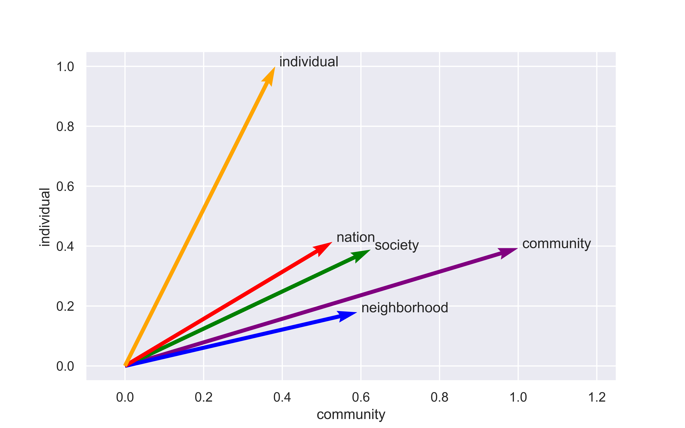
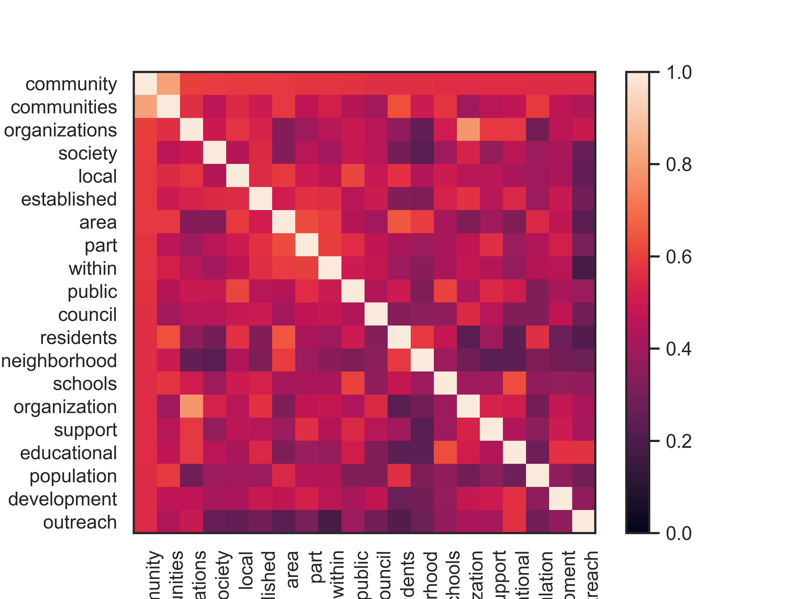
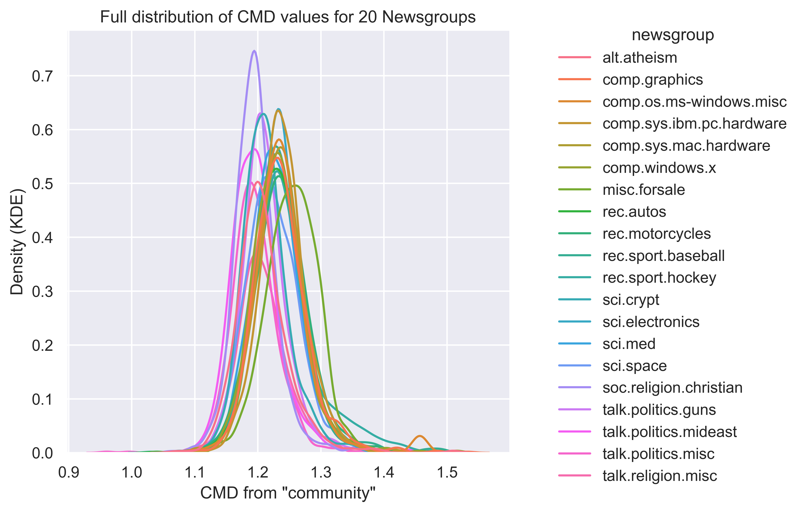
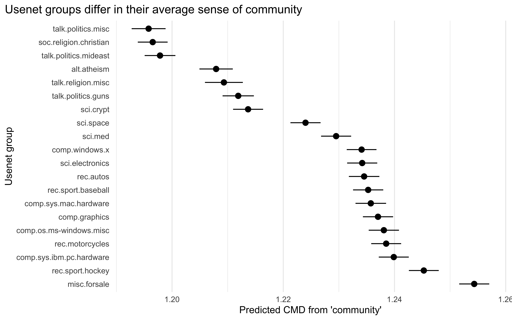

3 Geography or Gemeinschaft?
Disentangling the meaning of “community” through word embeddings
3.1 Proposal version
3.1.1 Short version
Chapter 1 asks, what can we learn about community from how the word is used in naturally-occurring language? This effort responds, in part, to a call from Levine (2017) to investigate the power and ambiguity of “community” in contexts other than local governance. My approach will be to systematically investigate connotations of community in texts generated by different groups of LGBTQ people, using word embeddings – a type of model that mathematically represent words based on the contexts in which they appear. The most basic mathematical model is an overlay of many different contexts; with some tweaks, word embedding models can compare different sets of contexts instead.
Either in the introduction or in this chapter, I plan to include more basic descriptive contextualization of “community,” e.g., keywords and N-grams over time. Though I think this is a case where underlying meanings are more of interest than surface-level words, readers will expect to see some of the latter.
As a proof of concept, I have already produced preliminary results come from a single off-the-shelf model trained on a general, generic corpus of text, meaning that there’s nothing LGBTQ-specific about them – yet. Nevertheless, these initial models reveal that the spatial connotations of community are linguistically distinct from the social and cultural connotations of the word, while the latter two hang together, suggesting the existence of a geography-Gemeinschaft continuum. In other words, the theoretical distinction between shared culture and shared social ties does not appear in these generic results. (By contrast, in some of Winer’s interview data, the “imagined community” and the world of everyday social ties are distinguishable.)
The empirical work I have already done illustrates the inherent breadth and ambiguity of the concept of community, but it doesn’t directly address the adjacent question of valence – generally, empirically, is “community” something with purely positive connotations (Levine 2017), or can it be something more ambivalent (Winer 2020)? It does, however, suggest that the source for those sentiments is to be found on the Gemeinschaft side, not the geography side.
The preliminary word embeddings work I have already done will be further developed in the following ways:
- Use the same basic framework to analyze texts from different groups, and compare results. This would allow me to measure variation in how community is used, and by extension, consider what community might “mean” to each. Based on feedback, I think this is the most promising direction for Chapter 1.
- Apply some algebraic transformations and use the existing models as a tool that measures Gemeinschaft. This is how I intend to measure social and cultural expressions of community in Chapter 3, in order to examine the consequences of having a strong sense of community.
My current plan for Chapter 1 is to fit local word embedding models to informal written text, drawn from queer and trans Usenet groups (Dame-Griff 2019), and compare how the concept of community is used in these groups to the generic model I’ve already explored. This application is appealing for a few reasons. First, informal written text (McCulloch 2019) is the most logical source for analyzing linguistic expressions of community, because it directly shows how the meaning of community is constructed through specifically social interactions. Social interactions in Usenet groups were text-based, as opposed to increasingly the image-, sound-, and video-centric content of contemporary social media. Spoken language is more ephemeral and harder to collect and analyze; more formal written texts like news articles are further afield from the actual experience of community. (That said, LGBTQ media like The Advocate’s archives would be a reasonable fallback corpus.) Second, while no longer widely-used, Usenet groups are one of the earliest instances of the successful creation of vibrant virtual communities – and in fact, their existence offered critical evidence demonstrating that virtual community is possible at all. Because the two other chapters will draw on contemporary cases, having one that provides a more historical perspective would set up a more general foundation for the dissertation as a whole. For this chapter, the main source of comparative analytic leverage is the generic model I’ve already done a “close read” of; by comparison, I’d expect the geographic connotations of community to be minimal in a virtual context, and the Gemeinschaft connotations to be emphasized in an queer context. I will pay particular attention to whether the social and cultural dimensions of community are distinct in these expressions.
3.1.2 Long version
“Community” – the literal word and the latent concept – is pervasive in everyday discourse. It appears in extremely varied and distinct contexts, everywhere from corporate mission statements to protest slogans. What is it about the meaning of community that makes it so amenable to these varied uses? What might it be doing when it does appear? I propose to investigate two interrelated questions: first, what is going on when people literally talk about “community”; and second, what is happening when people invoke the latent social concept that the word “community” points to, whether they literally use that word or not. I’m especially interested in how the empirical everyday meaning(s?) of “community” corresponds to or deviates from sociological understandings of Gemeinschaft, of community as a meso-level form of social organization. The computational method of word embeddings offers an empirical technique that is uniquely suited for investigating these questions, because – unlike other methods for computational text analysis – they move from surface-level words to underlying meanings and their relations (Arseniev-Koehler and Foster 2022; Stoltz and Taylor 2021). While the main aim of this project is descriptive and intrinsic, to provide a grounded account of the everyday social life of a social concept, it also furnishes a more precise tool for measuring when social actors implicitly or explicitly invoke community and belonging – in the Gemeinschaft sense – in the course of discursive action and interaction. I use a generic set of word embeddings to understand what “community” means in contemporary English-language discourse, and I apply algebraic transformations to show how the spatial and sociological connotations of the word can be disentangled. I’m still evaluating how best to use this new, resultant embedding as a measurement tool. I’ll discuss one preliminary experiment in applying that sociologically-inflected embedding for “community” to map out variation in community-oriented language in a historical set of virtual communities called Usenet, as well as other possible social texts I might draw on instead.1 At the end of this chapter proposal, I’ll describe multiple alternative potential applications and what the payoffs of each might be.
Community has a power and ambiguity that render it suitable for strategic rhetorical uses in everyday discourse. Two qualitative examples illustrate the shades of meaning that “community” can take on; together, these illustrate the range of variation that I might expect to see in a computational investigation of what community means as a folk concept. First, in the context of local governance, Levine (2017) observes that “community” becomes a “floating signifier of the good,” a halo of positivity to cover the real operation of local decision-making and to provide legitimacy for action. For Levine, this is harmful; he notes the impossibility of “the community” wanting one single thing as a uniform entity, and the harms of ascribing collective representational authority to whoever can show up to participatory events (Levine 2021). In his case, the word is constantly used in a positive and justificatory light, but so flexibly as to lose coherent meaning. Second, and in contrast to that wholehearted positivity, Winer (2020) finds that his interviewees have an ambivalent and distancing relationship with the “imagined gay community,” drawing a distinction between “the community” at large and their own social circles. Rather than pure vagueness, this points to another specific rhetorical use, to critique an in-group’s flaws rather than to justify desired actions. In these accounts, “community” assumes differing valences, with slippery or counterintuitive referents, but in each case the concept does important discursive work. I do not aim to create a taxonomy of these rhetorical strategies; instead I’ll show how all of these uses together add up and contribute to the overall semantic resonance that “community” takes on. Language, after all, is social and shared (Saussure [1916] 1972); later I’ll show how that shared foundation can be a springboard for understanding local deviations.
For fully understanding the social life of a complex concept, academic definitions are insufficient on their own, but worth reviewing as an anchor for comparison. “Community” is a phenomenon sociologists have elaborated on since Tönnies ([1887] 2001); they’ve created taxonomies of different types of communities (Brint 2001); argued over what communities count as “real” (Driskell and Lyon 2002; Rheingold 2000); and debated about what features – shared social networks/interactions or shared cultural/moral traits – are most fundamental to the creation and experience of it (Boessen et al. 2014; Vaisey 2007). What emerges consistently is the metaphor of a tightly knit social fabric, a group of people bound together by shared ties, shared culture, and possibly shared place.
However, the issue with using academic definitions of “community” as a starting point is that a strict definitional logic of concepts and categories does not apply “out there” in the real social world; classical logic may be useful for technical jargon, but it is not how ordinary human concepts work. Instead, everyday concepts are fuzzy and prototype-based (Bowker and Star 2000; Lakoff [1987] 2008, [1987] 2008; Monk 2022; Rosch and Mervis 1975; Zerubavel 2002). One way to see this is to think about how people figure out that something is a community in the first place. As Bruckman (2022) argues, we might decide that a virtual community like Wikipedia is a community through mental comparison to prototypes of community like a small town. A given example of community does not have to have all of a specific set of features in order to fall under the concept; rather, concepts and categories are bundles of “intensions,” inherently fuzzy constellations of characteristics and cues. “Community,” as an everyday concept, bundles together a spread of connotations; as I will show, the most notable of these are a geographic sense of “local place” and a sociological sense of “social group” or “object of belonging.”2 Because “community” encompasses both, even the most mundane use of community to refer to local place might still invoke the sentiment and connotation of Gemeinschaft. That is partly where the fuzziness and ambiguity of community as a concept could come from, and also part of the concept’s discursive power. However, distinguishing these two senses is necessary in order to open up a window into where and how the underlying meaning of Gemeinschaft and belonging appears in different discursive contexts.
This project, then, uses an empirical, inductive, and computational approach to discover what community means and compare it to theoretical expectations derived from sociological literature. It integrates the sociological definition of Gemeinschaft in an iterative way, making this an abductive approach (Brandt and Timmermans 2021), rather than a purely grounded one (Nelson 2017). To examine the resonances and connotations of community in generic English discourse, word embeddings are my computational method of choice. Word embeddings are a relatively recent (Mikolov et al. 2013) computational operationalization of an old linguistic idea, called the distributional hypothesis (Sahlgren 2008). As Firth (1957) put it, “You shall know a word by the company it keeps.” Accordingly, these models represent words as a function of all of their immediate contexts. To give one example:
“The history of all hitherto existing society is the history of class struggles.” (Marx [1848] 1972)
An embeddings model would take this sentence and learn about the semantic connotations of the the word “society” from its position near “history”, “class”, and “struggle”; it might also learn linguistic features common to nouns from its position in relation to words like “is” and “of.”3 Naturally, a model needs many such examples as training data, to produce a single overarching numeric representation for each word in a vocabulary. There are two main commonly-used word embeddings models – word2vec, based on a shallow neural network (Mikolov et al. 2013), and GloVe, based on cooccurrence matrix factorization (Pennington et al. 2014). (The differences are minor, so I choose one or the other based on convenience, not principle.) There are many other innovations and variations on the basic method; the most interesting is a family of models called contextualized word embeddings (e.g. BERT), which allow for more than one vector per word, instead of a single one – of course, these models take much more training data, and are much more complex! Simpler, older models offer a more straightforward and interpretable starting point; tackling the question of what “community” means in everyday English, in practice.
A generic model with a robust, comprehensive view of as many contexts as possible would approximate “the” meaning of every word in a language. To train general models for a given language, the most common corpora are large and publicly accessible texts from the Internet, e.g., Wikipedia pages, newswire articles, social media, or anything else that can be conveniently crawled from the web. (Historical embeddings use digitized book corpora.) These pretrained models can be used for a variety of questions and tasks, but they stand in contrast to locally trained models derived from specific corpora. Of course, meanings of words do vary – over time, over space, and by other social characteristics (Bamman, Dyer, and Smith 2014; Soni, Klein, and Eisenstein 2021). A general model trained on easily-accessible data works to the extent that meanings are common or shared; of course, this flattens variation. Given the social characteristics of the authors of formal online texts like Wikipedia or news corpora, in terms of gender, race, education, nationality, etc. (Hargittai and Shaw 2015; Vrana, Sengupta, and Bouterse 2020), models trained on those data necessarily overrepresent hegemonic cultural viewpoints. This overrepresentation is a form of bias, but also a matter of substantive interest (Caliskan, Bryson, and Narayanan 2017; Garg et al. 2017; Jones et al. 2020).
Distinct from other text-as-data methods (e.g. keyword dictionaries or topic models), embeddings models create dense, distributed vector representations of words. In this way, word embeddings encode a relational model of meaning; they build up a system of signs (Saussure [1916] 1972), a vocabulary, in which distances (or their inverse, similarity measures) in a high-dimensional space can be calculated between every pair of words. This makes embeddings useful for social-science problems where meaning matters – especially where variations or changes in meaning are of interest; they’ve been applied fruitfully in cultural sociology (Kozlowski, Taddy, and Evans 2019) and political science (Rheault and Cochrane 2020). An embeddings model can be thought of as distilling shared, declarative public culture (Lizardo 2017); Arseniev-Koehler and Foster (2022) go even further to argue that the training process is a reasonable heuristic model for actual cultural cognition.
But the dimensions the models learn are not themselves interpretable (nor are they consistent across models).4 To derive interpretable dimensions, social scientists use anchor words and simple algebra. One common approach is to construct new binary dimensions through subtraction (Kozlowski et al. 2019; Taylor and Stoltz 2020), opposing pairs of concepts that can be thought of as antonyms (e.g. rich - poor, woman - man).5 This idea springs from the algebraic analogy tasks that first made word embeddings notable in NLP (e.g., king - man + woman \(\approx\) queen). While these binary oppositions have a clear basis in cultural sociology (Douglas 1966; Durkheim [1912] 2001; Saussure [1916] 1972), they are not the only possibility. They don’t necessarily make sense for a concept that might bundle together multiple overlapping connotations or characteristics.
Instead, in this work, I deviate and borrow a different algebraic idea from NLP: “de-biasing” an embedding through orthogonal projection away from a target word vector (Gonen and Goldberg 2019). This approach originates in an attempt to mitigate gender bias in the words for different professions and occupations – which is undesirable for NLP tasks such as machine translation (Caliskan et al. 2017), even if it represents cultural associations or demographic facts about particular occupations that might be worth studying in themselves (Jones et al. 2020). That foundational work on this method makes it clear that it does not remove all the connotations of the undesired word – i.e., it does not fully succeed in de-biasing – but it is successful enough to use to disentangle the connotations of a concept like community.
I proceed from a standard set of word embeddings pre-trained on Wikipedia and newswire text (i.e., formal, written online English) and publicly released (Pennington et al. 2014). This is a generic set of embeddings, with all of the cultural biases that that necessarily entails. Starting with the vector for community, I select the 1000 words that are the nearest neighbors to it in the vocabulary, as measured by cosine similarity. I then decompose that subset of the embeddings space using principal components analysis, which I choose for its relative interpretability compared to other dimensionality reduction methods. I manually inspect the first several of these dimensions for potential substantive interpretations of interest, and select the second dimension for further analysis as representing a contrast between geographic and sociological connotations. I average the vectors for the most extreme words on either end of that PCA dimension, then finally project the original “community” vector away from the geographic end (and, implicitly, toward the Gemeinschaft end), in effect “de-biasing” the new “community” vector of those connotations. I argue that this produces an embedding that means community in a purely sociological sense, rather than a spatial one.
Word embeddings encode a notion of similarity; a key way to understand what a given word means in a model is to examine the words that are most closely related to it. These are the words that would show up in similar contexts. For a robust picture of what community means, I examine and visualize the 1000 nearest neighbors, shown with example words labeled, in Figure 1. To project the 300-dimensional vectors down into the two dimensions shown in the figure, I decompose those vectors with PCA.6 The first dimension (the x-axis in Figure 1) ranges from words like “if” and “we” and “not” to words like “not-for-profit,” “community-based,” “lgbt,” and “interfaith.” Based on the distributions of words along these dimensions, I label this first dimension as encoding a linguistic distinction between common, functional words and words that are more complex and substantive. While important for structuring the overall space of meaning, this distinction is not relevant for my analysis except potentially as a filtering mechanism. The second dimension (the y-axis in Figure 1), however, is more salient. Ranging from words like “town” and “located” to words like “cooperation,” “governance,” “organizations,” and “collective,” it encodes what I label a distinction between geography and Gemeinschaft. “Community” itself falls nearly in the middle between the two poles of this dimension.7
Drawing on each end of this geography-Gemeinschaft continuum, I select the 10 words (from the 1000-word neighborhood) that are the most extreme on either end. Figure 2 lists these two sets of words and shows that they do in fact fall into two distinct blocks – highly similar within each group, and highly distinct from the other group. By construction, the word “community” is highly similar to both groups – it quite literally bundles these two connotations together in a single concept. To produce a more robust vector measure for each underlying connotation of “geography” and “Gemeinschaft,” I average the 10 individual word vectors, as is common practice (Kozlowski et al. 2019; Waller and Anderson 2021).

Finally, using the “de-biasing” method I explained previously, I project the vector for “community” away from the averaged geography vector, creating a new concept vector I label community-as-Gemeinschaft. Figure 3 is a two-dimensional projection of this process that illustrates the results. In the figure, the x-axis represents similarity to the new community-as-Gemeinschaft vector; the y-axis represents similarity to the averaged geography words. By definition, each vector has a similarity to itself of 1, and the result of orthogonal projection is that the community-as-Gemeinschaft vector has a similarity to the geography vector of exactly 0. This has two consequences: community-as-Gemeinschaft remains very similar to the original community vector and to the averaged Gemeinschaft vector. An alternative approach – subtracting out the geography domain – does not result in a vector with the same properties.

The key outstanding question is what to do with what I’ve learned so far. How might I apply this novel, empirical understanding of “community” in generic English discourse to cases of sociological interest? I’ll discuss several options. A first possibility is to use this derived vector as a measurement tool, to measure how much a text resonates overall with the concept of community in the Gemeinschaft sense. Uniquely, compared to other text-as-data methods, embeddings models uncover both explicit and implicit references, due to their relational nature. This application is what I’ve experimented with so far, on an easy-to-use test corpus that isn’t necessarily the most compelling final choice. To move from individual words to longer texts – sentences or paragraphs or entire documents – some kind of aggregation method is necessary. Multiple such methods for summing or averaging word embeddings exists; one normalized or weighted method with advocates in sociology is called Word Mover’s Distance (Kusner et al. 2015) or Concept Mover’s Distance (CMD) (Stoltz and Taylor 2019). CMD calculates a distance metric between any given text and a target vector – in this case, the despatialized community vector representing community-as-Gemeinschaft. I applied this CMD measure to a corpus of texts from a set of virtual communities, with the idea that social text, where people are potentially building a community together through words, is where invocations of Gemeinschaft are most likely to appear and where they will have the most impact.
For convenience, I start by applying CMD to a public data set called 20 Newsgroups (Lang 1995); this is a collection of texts from 1993 from Usenet groups with distinct sets of topics ranging from religion and politics to computers and sports, and it’s a conventional test data set for text-related machine learning classification problems (Albishre, Albathan, and Li 2015; Shalaby and Zadrozny 2017; Sia, Dalmia, and Mielke 2020, among many others; Silge and Robinson 2017; Wallach 2006). Usenet is one of the earliest virtual communities, a decentralized discussion platform that predates the internet (Rheingold 2000). Importantly, Usenet groups vary in terms of their cultures as well as in terms of their substantive content; some are friendly and welcoming and inspire a sense of belonging in their members, while others are contentious and hostile (Baym 1994). Thus far, what I’ve been able to show is that there is significant between-group variation among the 20 newsgroups in how much their discussion posts resonate8 with community-as-Gemeinschaft (R2 = .19); of course, there is substantial within-group heterogeneity as well. I haven’t figured why this between-group variation exists: is it because some groups are more welcoming, and some more hostile, for instance? Is it a spurious artifact of topical differences? Ascertaining what drives that variation would take a closer read of the source texts (Nelson 2017); whether I decide to delve deeper into this particular corpus or not, it might provide a good reference case as I seriously interrogate the applicability of the CMD method.
A second possibility is, instead of using the community vector from the pretrained model on a corpus in a direct application, to fit local models to that corpus and then examine deviations from the meanings encoded in the generic, pretrained model – comparing models, in effect. To continue my example, what would “community” mean in a model that only saw it used in contexts from a place like Usenet? Given that Usenet is a virtual community, would the word have a geographic connotation at all? Or would it already be despatialized? That would show how early users of virtual platforms worked to remake and redefine community and establish their digital spaces as “real” communities; this trend might even be carried forward into contemporary virtual communities (of the sort I discuss in the Chapter 3 proposal). In different contexts, community might be more strongly tied to the idea of local place, even devoid of any sense of social organization; in still others, it might be associated more strongly with particular social identities. In any of these cases, comparing to both the overall generic embedding for “community” and the derived vector for community-as-Gemeinschaft would allow me to triangulate and obtain a clearer signal for how local relations of meaning are organized.9
In conjunction with either of the above approaches, I might tackle the question of valence directly: is community always inherently good, or does it shade into ambivalence in certain cases? Perhaps community has become increasingly positive over time, or perhaps it loses its affective charge as it becomes more ubiquitous – if community language has, indeed, become more prevalent. Addressing the valence and prevalence of community language requires reaching for text analysis tools beyond word embeddings. Embeddings-derived vocabularies of belonging might provide a robust set of keywords to trace in a descriptive way, and near-neighbor words in embeddings spaces can be combined with valence lexicons to measure positivity (Mendelsohn, Tsvetkov, and Jurafsky 2020). I might show, for instance, that the positive valence of community comes from the Gemeinschaft part of its connotation, where the geography words are more neutral. But particular methodological care must be taken to avoid spurious results (van Loon et al. 2022).
Finally, I’m not committed to using a corpus from a virtual community like Usenet or its contemporary successors; instead, as I develop the this project I’ll consider which corpora might provide interesting sources of variation. The key consideration here is the correspondence between the sources of textual data and the conceptual questions of interest.
For instance, change over time is one conventional dimension of variation in social science applications of word embeddings (Kozlowski et al. 2019; Rheault and Cochrane 2020). However, my initial experiments with historical word embeddings (Hamilton et al. 2016) have so far turned up little evidence that “community” changes in any interesting way over the course of the 20th century. It’s still useful to outline multiple historical data sources for examining semantic changes over time, and note their advantages and shortcomings:
Google Ngrams and other standard corpora used for historical embeddings have produced interesting general results, especially related to social biases and stereotypes encoded in language (Garg et al. 2017). Unfortunately, these have severe limitations in consistency post-2000, injecting bias into both descriptive frequency measures of terms and embeddings models themselves (Pechenick, Danforth, and Dodds 2015). This limits the use of these sources for studying contemporary changes that have taken place, like the rise of social media, that might have led to the fragmentation, proliferation, or some other reshaping of the meaning of community.
Media articles from sources like the New York Times offer a different means of constructing embedding sets over time that extends from the 1980s to the 2010s (Arseniev-Koehler and Foster 2022; Mendelsohn et al. 2020), pushing temporal comparisons into an interesting time frame. However, I’m unconvinced that newspapers of record are where I will observe the most interesting invocations of community.
By contrast to the New York Times, alternative and identity-focused media, like The Advocate and other long-running LGBTQ magazines, might be more salient, but would require me to assemble a corpus that has never been analyzed in this way before. Other researchers have assembled similar corpora from feminist movement literature (Nelson 2021a) and ethnic newspapers (Kim 2022) for forms of text analysis other than word embeddings; they’ve also trained embeddings models on 19th-century text data, namely abolitionist newspapers and narratives of lives in the US South (Nelson 2021b; Soni et al. 2021). All of these have produced intriguing and important results, but in some cases these corpora were the bases for entire dissertations in themselves.
Another comparison with a temporal dimension would be to take literally the notion that the concept “community” spans informal, everyday use and formal, academic use – and compare the two. In this case, I might ask what “community” would mean if a model learned its meaning inductively from sociological abstracts or social theory, and whether that meaning shifts to trace key intellectual currents like the Chicago School’s community ecology or the late 20th debates over “community lost” and the rise of virtual and identity-based communities. Kozlowski et al. (2019) have a supplemental analysis that does something like this with social class. Again, the lack of consistency in digitized corpora that aim to be generic or all-encompassing is a significant limitation in terms of what time frames can be compared.
Time isn’t the only covariate of potential interest. Social texts also offer the possibility of categorical comparisons between groups:
Returning briefly to Usenet, 20 Newsgroups isn’t the only data source; there are historical archives of queer and trans Usenet communities (Dame-Griff 2019) that might contrast with more general topical newsgroups, and I might compare any of these to contemporary social media-based groups as well.
Lastly, different kinds of corpora with distinct logics of production offer yet another possibility for constructing comparisons, and not necessarily temporally-based ones; for instance, corporate marketing versus political texts like speeches and activist literature. Intuitively, the latter might encode a clearer and more authentic expression of Gemeinschaft into the meaning of “community” – but the tone of corporate slogans strikes me as eager to exude the positive valence that “community” generally has, and so the reverse could well be true.
Even if the data are unsettled, I have many possibilities for deploying word embeddings as an analytic and measurement tool to study variations in the meaning of and invocation of community.
3.2 Previous version
3.2.1 Introduction
Community is an ambiguous concept with both sociological and everyday uses. Understanding what is essential and what is incidental to the meaning of the term opens up the ability to analyze how much people engage with or invoke the underlying meaning of community in different social groups or social contexts. Experiences of community, participation, and belonging are important both intrinsically, as one facet of individual experiences in social groups, and extrinsically as one potential motivation for social action. Using a computational approach to text analysis, I offer an empirical understanding of how “community” is used in popular English-language discourse. I apply that understanding to a set of virtual communities to demonstrate how they vary.
In one view, community is a product of moral or cultural unity combined with social or interactional density (e.g. Tavory 2016, drawing on Durkheim). This way of thinking about community treats Gemeinschaft as the core element of community, and geographic proximity as incidental. As one line of evidence in favor of this view, extensive research has shown that virtual communities are real communities, in the sense that they really do instill a feeling of Gemeinschaft in their members (Driskell and Lyon 2002; e.g, Rheingold 2000). Of course, geography still structures much of social life; propinquity may enable community without being synonymous with it (Spiro, Almquist, and Butts 2016). Despite this theoretical distinction, the word “community” in everyday use may still entail geographic as well as sociological or psychological senses. Disentangling or disambiguating these senses is a core challenge for computational work. The payoff is that we might then be able to observe in real settings when people create, invoke, or experience a deep sense of community.
I use word embeddings to analyze the meaning of community. Embeddings models are an ideal method for this problem, as opposed to other text-as-data techniques like descriptive frequencies of word counts or topic models, because they encode meaning relationally. I use the similarities between “community” and other words in tandem with sociological definitions of community to determine what meanings are being brought together in the vector representation of the word. Preliminarily, I rely on pretrained GloVe embeddings, originally developed from a large corpus of Wikipedia and other online data (Pennington et al. 2014).
Groups and individuals vary in the extent to which they experience a sense of community, and in the extent to which they communicate that sense of community through their language. I demonstrate this variation by adapting Concept Mover’s Distance (Stoltz and Taylor 2019) and applying it to posts from 20 Usenet newsgroups from the 1990s. These virtual communities were a precursor to present-day online and social media communities. Different Usenet groups have different cultures, and I show that average engagement with the concept of community differs between groups based on their topical focus. My initial findings are in line with my prior expectations in some cases, and diverge in others.
These analyses inform each other. The more theoretical analysis of the general discursive meaning of community is needed in order to interpret how people in different groups invoke that underlying meaning. The more empirical application to real communities not only shows the utility of the theory and method, but can allow me to refine it in an iterative process. In particular, I plan to use the theoretical dimensions I develop to difference out the geographic aspect of community in my empirical analysis.
This work makes two contributions. Substantively, it offers a new way of studying experiences of community across different groups, with potential applications in offline as well as online contexts. Methodologically, it combines prior sociological theory and text data to bring empirical clarity to a complex abstraction, with potential relevance for studies of other sociological concepts. I contribute to a growing literature adapting embeddings for sociological ends by extending the method to a concept that is rather less concrete and clear-cut. For instance, “community” is not quite like binary concepts such as social class (Kozlowski et al. 2019), health or morality (Arseniev-Koehler and Foster 2022), or conservative or liberal politics (Taylor and Stoltz 2020). Community has no one clear antonym. While one might conceptually oppose community to the individual, one could just as easily oppose community to society writ large. Disentangling the meaning of community with word embeddings requires making these sorts of theoretically-informed analytic choices.
3.2.2 Data and methods
Word embeddings are dense vector representations of words based on their contexts. These models were developed by natural language processing (NLP) researchers Mikolov et al. (2013), and have been imported into the social sciences, especially cultural sociology and political science (e.g. Kozlowski). I use pretrained GloVe embeddings, rather than training models locally on the Usenet data set. Generally, prior social science researchers have found pretrained embeddings to be reasonably robust, stable, and generalizable Rodriguez and Spirling (2020), and I find similarly in supplemental analyses.
To measure engagement with community in at the level of individual Usenet posts, I use Concept Mover’s Distance (Stoltz and Taylor 2019). Concept Mover’s Distance is a sociological adaptation of Word Mover’s Distance (Kusner et al. 2015), which aggregates all of the word-level embeddings in a document and compares them to another. Because I use the Python implementation of Word Mover’s Distance in the gensim package, there are minor differences in the distance metric and algorithm; I expect the results reported below to be robust to such minor variations. I also do not standardize or invert the values I report.
Usenet is a distributed system for sharing electronic messages which predates the contemporary Internet, organized into topical groups such as alt.atheism or rec.motorcycles. Some of these groups are reported to have had a strong sense of community, while others were known for their hostility (Baym 1994; Dame-Griff 2019). This expected variation makes Usenet a compelling data source for analyzing how community-oriented different groups might be.
The 20 Newsgroups data set was compiled in 1995 and consists of nearly 20,000 messages approximately evenly distributed across those 20 groups (Lang 1995). It is a purposive sample of groups collected to represent diverse topical categories, originally intended for machine learning classification research (e.g. Dai and Le 2015) and also used as a teaching tool for topic modeling (e.g. Silge and Robinson 2017). These data are both convenient to obtain (through scikit-learn) and relevant, and so I repurpose them here for a more sociologically-oriented analysis.
3.2.3 Results
I analyze what, exactly, about the meaning of community is encoded in an embedding model by examining how similar words are to each other, according to the cosine similarity of their vectors. Figure 1 shows this schematically with a small set of words I selected. The axes of the figure are “similarity to ‘community’” and “similarity to ‘individual.’” “Neighborhood,” for instance, is far more similar to “community” than to “individual.”
More systematically, an initial qualitative analysis examining the nearest neighboring words to community (Figure 2) reveals both words related to geography (e.g. “local”, “area”, “residents”) and words related to Gemeinschaft (e.g. “organization”, “support”). PCA of a larger set of neighboring words (N = 100) reveals similar trends, and formal clustering or dimension-creation is a logical next step.
In additional analyses, I show that the meaning of community is stable across corpora and over time. I follow Rodriguez and Stirling and confirm that the meaning of community has a moderately high correlation across embedding models pretrained on two independent data sources, Wikipedia and Twitter (Pearson correlation between cosine similarities = 0.636). I also confirm that the meaning of community is moderately stable over the course of the 20th century, using historical word embeddings pretrained with Google n-grams (Hamilton et al. 2016). These results increase my confidence that these pretrained embedding models encode a core definition of community and can be fruitfully applied to the Usenet data.10
Turning to those data, I apply Concept Mover’s Distance (CMD) to each of the posts from the 20 Usenet groups included in the data set (N = 18,296 posts in total). For now, I simply measure the distance of each post from the undifferentiated concept “community,” though I plan to difference out the geographic dimension of community in subsequent refinements of the analysis.
The full distribution of CMD values in Figure 3 shows substantial overlap between Usenet groups, as well as substantial variation within groups. This is unsurprising, because each of these groups is a virtual community of some sort, and individual posts might be expected to vary in their tone and content substantially, just as individual experiences might vary.
At the same time, the different Usenet groups do in fact differ substantially and significantly in the average closeness of their posts to the concept of “community.” Figure 4 shows the predicted mean CMD for each group (R2 = 0.133, F = 147.17, p = 0.0). This simple statistical test shows that a small but substantial proportion of the variation in CMD is variation between different Usenet groups, rather than variation within groups. In some cases, this variation is in line with what we might expect topically: religion groups are more community-like, the forsale group is the least. In other cases, such as politics or sports, it may be that the specific norms and tone of the communities serve to generate a sense of community, regardless of how contentious or communal the topic might be.




I’ve experimented with applying a toy version of half a dozen variations on word embedding methods to the word/concept of “community”. What I discuss here is what struck me as having the most potential.↩︎
Importantly, having multiple connotations is not quite the same thing as the pure linguistic phenomenon of polysemy (Hamilton, Leskovec, and Jurafsky 2016), where a word has two totally separate meanings that context clearly disambiguates (e.g. “river bank” and “money in the bank”).↩︎
The size of the context “window” is an important parameter embeddings models can vary, as is the size of the vector representation that is output. For instance, 6 might be a reasonable window, 300 might be a reasonable embedding size (Pennington, Socher, and Manning 2014; Rodriguez and Spirling 2020).↩︎
When comparing embeddings models, there are methods to align the embeddings spaces to facilitate comparison.↩︎
The mathematical reification of binary gender is one example where the shortcomings of binary axes are obvious; what if masculinity and femininity are thought of as orthogonal rather than opposed?↩︎
The 300 dimensions of the embeddings space encode a substantial amount of subtle information that is lost with dimensionality reduction, so the proportion of variance explained by the first several dimensions is relatively low. Kozlowski et al. (2019) have shown similar results in an experiment with PCA and with explicit cultural dimensions.↩︎
My results are robust to two checks: first, using 100 neighboring words instead of 100; second, using a separate set of embeddings trained from Twitter rather than Wikipedia data, using the same GloVe method.↩︎
Stoltz and Taylor say “engage with” a concept instead of “resonate,” but I think they imply too much intentionality.↩︎
In a similar vein, contextual embeddings models like BERT also offer a separate, distinct way to study local variation – but with even greater reliance on a complex pretrained black-box model derived from large data sets.↩︎
These supplementary analyses can be viewed at https://ccgilroy.github.io/community-discourse/↩︎